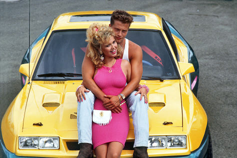

Manta Manta
Bertie und seine Clique fiebern einem turbulenten Wochenende entgegen. Sie haben nur eines im Sinn: ihre Mantas, die sie mit viel Schweiß und Fleiß zu eindrucksvollen Kraftpaketen aufgepäppelt haben. Endlich Zeit, die Cowboystiefel auf Hochglanz zu polieren, die Blondine auf den Beifahrersitz zu verfrachten und die schmucken Boliden nach allen Regeln der Kunst auszufahren.
Kritik: Manta Manta auf dem entertainment-blog

Komödie aus dem Jahr 1991
- deutscher Hollywoodschauspieler Til Schweiger spielt einen stereotypischen Autoproll.
- Opel Manta feiert seinen Auftritt als Kultauto des 80er-Jahre Ruhrpottcharms.